The CSS position attribute lets you control where and how the browser places the element in question. The position attribute has four values: static, relative, absolute and fixed.
These values are key to laying out your pages using CSS. Below, I will explain and illustrate each of them. The examples all use the following html:
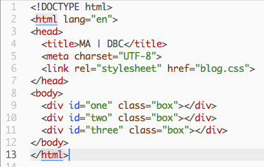
static is the default setting. This value displays each box-level element on a new line. See the sample CSS and its output below. (Note that I included the "positon: static;" line for illustration purposes; as the default setting it is not necessary to include this line.)
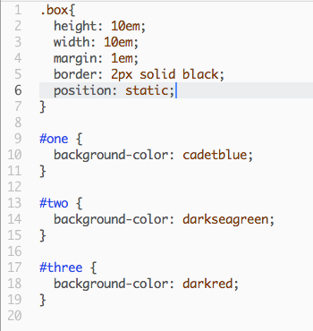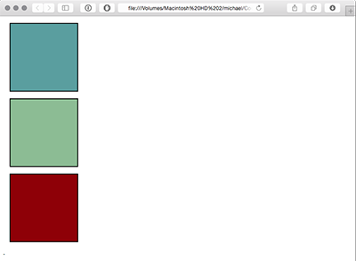
The relative value lets you offset an element relative to where it would normally have been placed. When you use this position, you must supply one or two of the following additional attributes: top or bottom, and left or right. The item in question will be offset away from that direction by whatever distance you give it (in px or em). This more easily shown in an example than explained in words. It is also important to note that other items on the page will not be moved; they will be arranged around the space the relative item would occupy if it were static.
In the example below, making the green square relative and setting top to 5em moves it down (away from the top). Notice how the red and blue squares do not move.
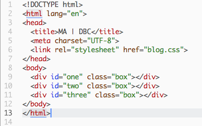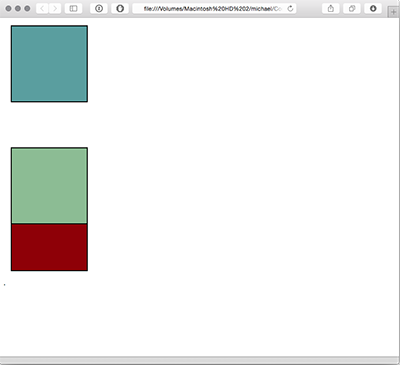
And in this example, setting nottom to 5em moves it up (away from the bottom):
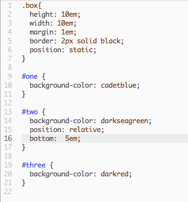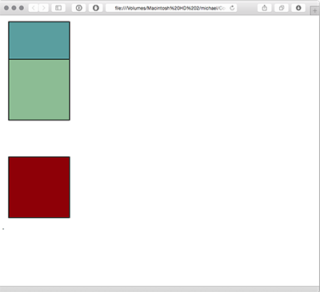
The absolute value pulls the element out of the normal flow, and its location is set relative to its container with the top, bottom, left and right attributes.
In the example below, I have set the green square to absolute , and put it 3em away from the top and right sides of the container element (in this case, the <html> tag). Notice that it is pulled out of the original flow completely, and the red square slides up as if the green square weren't in the code at all.
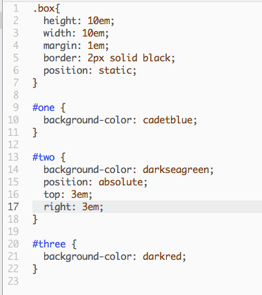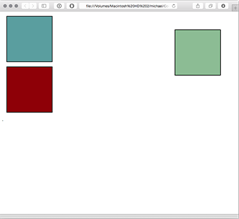
The fixed value is similar to absolute in that the value is not part of the normal flow of elements, but where absolute sets the elements position relative to its containing element, fixed sets its' position based on the browser window. The effect is that when you scroll through the page, the fixed element will not move.
This is particularly useful for creating headers that "stick" to the top of the page, like so:
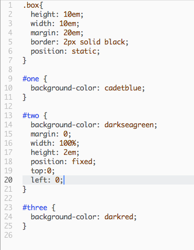
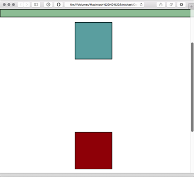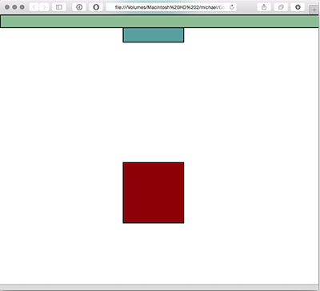